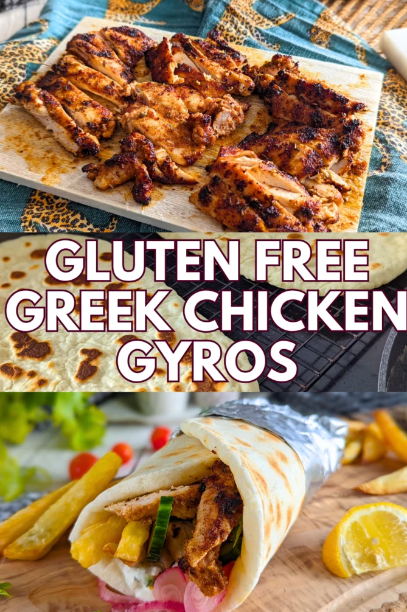
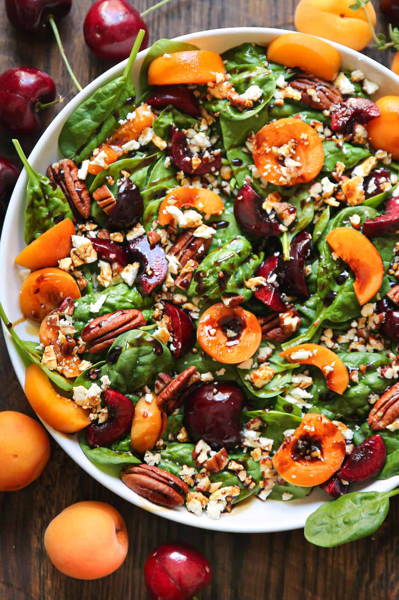

📊 Nutrition Target Planner
Build each day around a target, then expand the same structure later for additional nutrients. APOE4 and Fatty liver conditions both desperately need higher than normal choline and omega-3. specifically EPA and DHA found in marine sources—are powerful tools for lowering triglycerides, improving liver fat scores, and providing vital neuroprotection against cognitive decline.
Uncheck anything you're out of — the recipe grid filters instantly to show only what you can make right now. Your pantry is saved between visits.
Category, search, pantry, and condition filters all work together, so you can narrow recipes with any combination of them.
bone broth ⋅ eggs ⋅ ground flaxseed ⋅ sesame oil ⋅ ginger ⋅ scallion (optional)
A Chinese-restaurant-style egg drop soup modified for glycemic stability. Traditional cornstarch is replaced with a tiny amount of finely ground flaxseed so the broth thickens into a silky texture without glucose spikes.
APOE4 125 - 150 mg - Excellent Source of Choline. 750 - 1000 mg - Excellent Source of Omega-3.
Fatty Liver 125 - 150 mg - Excellent Source of Choline. 750 - 1000 mg - Excellent Source of Omega-3.
Kidney Stone Low-oxalate, citrate-supporting ingredients and a lighter stone-risk profile help keep the meal aligned with kidney stone prevention.
Celiac / GF Gluten-free by design and built around gut-friendly ingredients that fit the celiac protocol without relying on wheat or standard starch fillers.

psyllium husk ⋅ warm water ⋅ sorghum ⋅ almond flour ⋅ baking powder ⋅ EVOO
A soft, foldable GF gyro pita made with psyllium gel for elasticity and whole-grain millet or sorghum for a rustic flavor. Pan-fried and immediately wrapped in a damp towel so the finished flatbread stays supple enough for gyros, kebabs, and warm Mediterranean fillings.
DP / Blood Sugar Structured to flatten the glucose curve with low net-carb ingredients, fiber support, and a gentler insulin response pattern.
Kidney Stone Low-oxalate, citrate-supporting ingredients and a lighter stone-risk profile help keep the meal aligned with kidney stone prevention.
Celiac / GF Gluten-free by design and built around gut-friendly ingredients that fit the celiac protocol without relying on wheat or standard starch fillers.
1 large egg ⋅ almond oil ⋅ lemon juice or ACV ⋅ salt
It doesn't taste the same as jarred mayo. Give it a try and see what you think. An alternative is to use unflavored yogurt or add some yogurt to give a more similar flavor to store-bought. A clean, fast mayo made with almond oil instead of seed oils or EVOO. Olive oil (EVOO) is great for most things, but an immersion blender cases some odd flavor shifts making it have some bitterness. The immersion-blender method works best with a room-temperature egg in a tall jar.
DP / Blood Sugar Structured to flatten the glucose curve with low net-carb ingredients, fiber support, and a gentler insulin response pattern.
Kidney Stone Low-oxalate, citrate-supporting ingredients and a lighter stone-risk profile help keep the meal aligned with kidney stone prevention.
Celiac / GF Gluten-free by design and built around gut-friendly ingredients that fit the celiac protocol without relying on wheat or standard starch fillers.
monkfruit + allulose blend ⋅ psyllium ⋅ Ceylon cinnamon
A no-sugar mint made from monkfruit/allulose sweetener, Ceylon cinnamon, and psyllium husk powder. Knead with water into a narrow cylinder, slice into small pieces, and air cure until fully firm.
Warning: no more than two small mints in close succession. Psyllium swells and forms a gel, which can become a choking and digestive-system hazard.
DP / Blood Sugar Structured to flatten the glucose curve with low net-carb ingredients, fiber support, and a gentler insulin response pattern.
Kidney Stone Low-oxalate, citrate-supporting ingredients and a lighter stone-risk profile help keep the meal aligned with kidney stone prevention.
Celiac / GF Gluten-free by design and built around gut-friendly ingredients that fit the celiac protocol without relying on wheat or standard starch fillers.
almond flour ⋅ monkfruit + allulose blend ⋅ baking powder ⋅ eggs ⋅ milk ⋅ almond oil ⋅ vanilla extract
A gluten-free waffle batter using almond flour and monkfruit-allulose sweetener. Uses a lighter almond oil ratio to keep texture crisp outside and tender without feeling overly rich.
DP / Blood Sugar Structured to flatten the glucose curve with low net-carb ingredients, fiber support, and a gentler insulin response pattern.
Celiac / GF As all the recipes in the library are, this is gluten-free.
almond flour ⋅ baking powder ⋅ Greek yogurt (Sugar Shift) ⋅ everything bagel seasoning
Almond flour + Greek yogurt dough rolled into bite-size balls, coated in everything-bagel seasoning, and baked until set. A practical gluten-free, lower-net-carb bread-style option with better protein than most snack breads. If you get a batter instead of a dough, the yogurt was not strained enough. You can salvage it by adding a little bit of a thirsty flour such as sorghum or millet until it is to a consistency of dough.
DP / Blood Sugar Structured to flatten the glucose curve with low net-carb ingredients, fiber support, and a gentler insulin response pattern.
Fatty Liver Designed to reduce hepatic lipid stress with lower saturated-fat load, more polyphenol-rich produce, and ingredients that support liver fat handling and metabolic recovery.
Kidney Stone (portion-aware) Low-oxalate, citrate-supporting ingredients and a lighter stone-risk profile help keep the meal aligned with kidney stone prevention.
Celiac / GF As all recipes in the library, this one is gluten-free.
almond butter ⋅ pepitas ⋅ hemp hearts ⋅ almonds ⋅ flaxseed ⋅ psyllium husk ⋅ cinnamon
A crunchy, no-sugar seed-and-nut bar held together with psyllium husk and ground flax instead of sweeteners or grain flour. It is dense, satisfying, and easy to batch for the week, with a cookie-like sweet variation that keeps the same structure but adds a warm vanilla finish. Personally, I enjoy the no bake version over the baked.
DP / Blood Sugar Structured to flatten the glucose curve with low net-carb ingredients, fiber support, and a gentler insulin response pattern.
Kidney Stone Low-oxalate, citrate-supporting ingredients and a lighter stone-risk profile help keep the meal aligned with kidney stone prevention.
Celiac / GF Gluten-free by design and built around gut-friendly ingredients that fit the celiac protocol without relying on wheat or standard starch fillers.
red lentils ⋅ black beans ⋅ pinto beans ⋅ green split peas ⋅ steel-cut oats ⋅ bone broth ⋅ EVOO
Five overnight sous vide recipes cooked in 12 oz mason jars at precise 180°F (82.2°C) for 8 hours. Load the multi-cooker water bath before bed, wake up to ready-to-eat meal prep components. Red Lentils mash into a smooth paste for wraps or bowls. Chili-Base Black Beans with cumin and chili powder ready for tacos. Mediterranean Pinto Beans with oregano and EVOO become creamy refried beans. Green Split Peas in Bone Broth create a thick, savory paste with heme iron cofactors. Steel-Cut Oats with Ceylon cinnamon for glucose-conscious breakfast reheating. All legumes deliver resistant starch — the prebiotic fiber that feeds butyrate-producing gut bacteria and blunts post-meal glucose spikes. Gentle cooking preserves nutrients while breaking down anti-nutrients. Zero active morning work.
Kidney Stone Low-oxalate, citrate-supporting ingredients and a lighter stone-risk profile help keep the meal aligned with kidney stone prevention.
Celiac / GF Gluten-free by design and built around gut-friendly ingredients that fit the celiac protocol without relying on wheat or standard starch fillers.
ground beef ⋅ kale ⋅ parmesan ⋅ lemon ⋅ onion ⋅ garlic ⋅ EVOO ⋅ oregano
Ground beef browned with activated garlic and onion, tossed with wilted kale, finished off-heat with lemon juice and zest, then topped with grated Parmesan. Uses kale rather than spinach — nearly identical taste and texture once wilted but ~200× lower in oxalate (2–4mg vs 600–900mg per 100g raw). Lemon's citrate supports urinary citrate formation, and Parmesan gives the savoury finish without the higher-carb cheese profile. ~3–5mg oxalate per serving. All six conditions.
APOE4 Built around the APOE4 pattern: olive-oil-first fats, lower saturated-fat load, and liver-friendly ingredients that reduce vascular and glucose stress while keeping the meal more brain- and metabolism-friendly.
MTHFR Supports the MTHFR pattern with methylation-friendly folate, B-vitamin density, and low-oxidative ingredients that help buffer homocysteine and inflammatory stress.
Celiac / GF Gluten-free by design and built around gut-friendly ingredients that fit the celiac protocol without relying on wheat or standard starch fillers.
ground beef ⋅ bell pepper ⋅ cauliflower ⋅ tomatoes ⋅ onion ⋅ garlic ⋅ parmesan ⋅ EVOO
Raw cauliflower rice goes directly into the filling and steams inside the pepper during baking — do not pre-cook. ~5–8mg oxalate per stuffed pepper. All six conditions.
DP / Blood Sugar Classic stuffed bell peppers rebuilt for the blood sugar protocol: cauliflower rice replaces grain rice, removing ~40g carbs per serving (from ~60–70g to ~15–20g total). Lycopene in the tomatoes is a powerful antioxidant that neutralizes free-radicals to protect insulin receptors.
APOE4 Built around the APOE4 pattern: olive-oil-first fats, lower saturated-fat load, and liver-friendly ingredients that reduce vascular and glucose stress while keeping the meal more brain- and metabolism-friendly.
Fatty Liver Lycopene from tomato sauce is absorbed via EVOO. It controls both lipid clearance and inflammation control.MTHFRRed bell pepper is one of the highest Vitamin C foods by weight — protects methylfolate and boosts iron absorption.
Fatty Liver Gluten-free by design and built around gut-friendly ingredients that fit the celiac protocol without relying on wheat or standard starch fillers.
ground beef ⋅ onion ⋅ parsley ⋅ allspice ⋅ Ceylon cinnamon ⋅ garlic ⋅ labneh ⋅ lemon
Ground beef patties with grated onion (squeezed dry — essential), fresh parsley, allspice, cinnamon, and black pepper. Allspice eugenol inhibits COX-2 inflammation. Zero carbohydrates; ~2–4mg oxalate per serving. Garlic must be activated before adding. Served with labneh, cucumber, cherry tomatoes, and lemon. Ideal post-exercise protein meal. All six conditions.
DP / Blood Sugar Cinnamon activates GLUT4 receptors (same mechanism as Berberine).
APOE4 Built around the APOE4 pattern: olive-oil-first fats, lower saturated-fat load, and liver-friendly ingredients that reduce vascular and glucose stress while keeping the meal more brain- and metabolism-friendly.
MTHFR Parsley is the highest folate food by weight. You thought it was just decorative, didn't you.
Celiac / GF Gluten-free by design and built around gut-friendly ingredients that fit the celiac protocol without relying on wheat or standard starch fillers.
olives ⋅ pimento ⋅ cauliflower ⋅ carrot ⋅ celery ⋅ bell pepper ⋅ capers ⋅ garlic ⋅ EVOO ⋅ red wine vinegar
The Italian antipasto olive salad rebuilt with EVOO instead of seed oil — olives (whole and chopped), pimento, cauliflower, carrots, celery, red bell pepper, capers, garlic, red wine vinegar, and spices all cut to a fine 5mm dice and preserved in cold-pressed extra-virgin olive oil. Replaces every commercial jar with seed oil in the fridge. Every spoonful delivers activated allicin from garlic.
DP / Blood Sugar Acetic acid from the vinegar (same mechanism as the ACV capsule) reduces blood sugar from what is eaten immediately after it. The quercetin in the capers is a mild metabolic regulator which helps with lowering blood sugar and insulin resistance.
APOE4 Built around the APOE4 pattern: olive-oil-first fats, lower saturated-fat load, and liver-friendly ingredients that reduce vascular and glucose stress while keeping the meal more brain- and metabolism-friendly. The quercetin in the capers is neuroprotective and is commonly used in nutrition protocols for Alzheimer's prevention because it stabalizes Apoliprotein E in the brain, inhibits harmful neuro-inflamation, and reduces the formation o amyloid-beta oligomers.
MTHFR Supports the MTHFR pattern with methylation-friendly folate, B-vitamin density, and low-oxidative ingredients that help buffer homocysteine and inflammatory stress.
Fatty Liver Capers are the highest food source by weight of quercetin. Recent human randomized controlled trials and meta-analyses demonstrate that quercetin significantly reduces liver enzymes (ALT, AST, GGT), lowers intrahepatic fat accumulation, and clears inflammation via AMPK-mediated pathways.The polyphenols in olive oil (tyrosol and oleocanthal) are unique are powerful metabolic switches in liver tissue which downregulates de novo lipogenesis (the creation of new fat cells in the liver). they suppress the NF-xB and STAT3 pathways which are the exact inflammatory cascades that turn benign fatty liver into aggressive inflammation and liver fibrosis. It also reduces hydrogen peroxide release within liver mitochonria which allows repairs of the cellular leaks that cause liver tissue damage.
Celiac / GF Gluten-free by design and built around gut-friendly ingredients that fit the celiac protocol without relying on wheat or standard starch fillers.
Kidney Stone Quercetin again pops up. This time as a natural calcium chelator which means it competes with oxalate to bind with calcium reducing the risk of a stone. ~2–3mg oxalate per serve.
salmon ⋅ olives ⋅ capers ⋅ garlic ⋅ sardines ⋅ smoked salmon ⋅ onion ⋅ walnut ⋅ basil ⋅ almond butter ⋅ hemp hearts ⋅ sesame seeds ⋅ EVOO
A therapeutic replacement set for the cheese-and-butter slot on crackers and bread: 1) Mediterranean olive salad salmon, 2) sardine or smoked salmon paté, 3) roasted garlic and onion confit, 4) savory almond butter and seed crunch, and 5) walnut pesto. The goal is to preserve the rich, salty, decadent experience without repeating the saturated-fat trigger that tends to worsen APOE4, liver stress, and inflammatory load. These spreads keep the snack comfort while supporting a more stable metabolic pattern. MTHFR fit: Supports the MTHFR pattern with methylation-friendly folate, B-vitamin density, and low-oxidative ingredients that help buffer homocysteine and inflammatory stress. Kidney stone fit: Low-oxalate, citrate-supporting ingredients and a lighter stone-risk profile help keep the meal aligned with kidney stone prevention. DP / blood sugar fit: Structured to flatten the glucose curve with low net-carb ingredients, fiber support, and a gentler insulin response pattern. Celiac / GF fit: Gluten-free by design and built around gut-friendly ingredients that fit the celiac protocol without relying on wheat or standard starch fillers.
chicken livers ⋅ onion ⋅ garlic ⋅ herbs ⋅ EVOO ⋅ lemon
The most nutrient-dense weekly anchor in the library. and 32% B1 thiamine. Soaked in lemon water first to mellow the flavour, then pan-seared with caramelized onions and finished with activated garlic. Once weekly — Vitamin A cap.
APOE4 Choline (135 mg) and omega-3 (1800 - 2200 mg) rich.
MTHFR Choline (135 mg) and omega-3 (1800 - 2200 mg) rich. Also has 100% daily requirement for B2 Riboflavin which is a MTHFR enzyme cofactor.
DP / Blood Sugar Low in carbs (3.5 net)
Kidney Stone Zero oxalate.
Celiac / GF Gluten-free by design and built around gut-friendly ingredients that fit the celiac protocol without relying on wheat or standard starch fillers.
smoked oysters ⋅ millet / millet flour ⋅ avocado ⋅ cucumber ⋅ garlic ⋅ lemon
Canned smoked oysters over warm millet with avocado, cucumber, activated garlic, and lemon. Ready in 20 minutes from pantry staples — no fresh seafood sourcing, no Vibrio risk (fully cooked). ~31% heme iron, >100% selenium, and preformed DHA (bypasses the impaired ALA→DHA conversion in APOE4). Pairs in alternating weeks with Recipe 42 (chicken livers) for complementary full-spectrum coverage. Zero oxalate.
DP / Blood Sugar 100% zinc (cofactor for insulin synthesis and receptor signalling — the two primary failure points in pre-diabetes).
MTHFR 100% daily requirement for B12, naturally. Supports the MTHFR pattern with methylation-friendly folate, B-vitamin density, and low-oxidative ingredients that help buffer homocysteine and inflammatory stress.
APOE4 100% daily need of selenium. Deficiency in selenium causes a backup of homocysteine clearance.
Celiac / GF Gluten-free by design and built around gut-friendly ingredients that fit the celiac protocol without relying on wheat or standard starch fillers.
sardines ⋅ cucumber ⋅ romaine ⋅ olive salad ⋅ hemp hearts ⋅ EVOO ⋅ parsley ⋅ lemon
A large chopped salad built around sardines, cucumber, romaine, olives, hemp hearts, parsley, and EVOO. This is one of the cleanest “brain-and-liver” meals in the library: strong marine EPA/DHA support, a solid choline contribution, and very little glycemic load. The olive salad brings salty depth and polyphenols; the hemp hearts add healthy fat and a gentle nutty texture; the cucumber keeps the bowl crisp and flat on glucose.
APOE4 This is a solid omega-3 (1800 - 2200 mg) and choline (135 mg) powerhouse.
MTHFR This is a solid omega-3 (1800 - 2200 mg) and choline (135 mg) powerhouse.
DP / Blood Sugar Lots of protein and fiber yet low in carbs.
Celiac / GF Gluten-free by design and built around gut-friendly ingredients that fit the celiac protocol without relying on wheat or standard starch fillers.
mackerel ⋅ broccoli ⋅ garlic ⋅ EVOO
Wild mackerel seared in a hot skillet until the skin crisps and the flesh stays rich, tender, and loaded with EPA/DHA. Paired with roasted broccoli and activated garlic, this is one of the most nutrient-dense seafood meals in the library: high choline, exceptional marine omega-3, and a very low glycemic load. The cruciferous medley brings sulfur compounds and deep roasted flavor while the fish provides the direct, highly bioavailable omega-3s that APOE4 and fatty-liver pathways often need.
Fatty Liver High choline
APOE4 Built around the APOE4 pattern: olive-oil-first fats, lower saturated-fat load, and liver-friendly ingredients that reduce vascular and glucose stress while keeping the meal more brain- and metabolism-friendly.
Celiac / GF Gluten-free by design and built around gut-friendly ingredients that fit the celiac protocol without relying on wheat or standard starch fillers.
snow crab clusters ⋅ EVOO ⋅ garlic ⋅ lemon ⋅ parsley
Snow crab clusters steamed until warm and tender, then served with a simple garlic-lemon EVOO dip and fresh herbs. This is a low-carb, low-saturated-fat seafood option that still delivers useful choline and marine omega-3 support. The warm olive-oil dip is a clean replacement for butter, helping protect APOE4 and FTO lipid pathways while keeping the meal gentle on blood sugar and liver stress.
Fatty Liver Excellent choline source and low glycemic load.
APOE4 Uses EVOO as the main fat source to reduce LDL burden and support cleaner energy handling.
MTHFR B12 and zinc support methylation and homocysteine clearance.
shrimp ⋅ garlic ⋅ lemon ⋅ EVOO ⋅ greens
Shrimp sautéed in garlic and lemon with a little EVOO and served over greens. It is one of the quickest clean protein options in the rotation: solid choline, B12, and a low saturated-fat MUFA base that supports the APOE4/FTO pattern without requiring avocado or grains.
Fatty Liver Strong choline support.
MTHFR Good B12 and methylation support.
Celiac / GF Gluten-free and naturally low-carb.
salmon ⋅ cabbage ⋅ lemon ⋅ dill ⋅ EVOO
Roasted salmon with a crisp cabbage salad and lemon-herb dressing. This is the strongest non-avocado seafood option for your target list: very high marine omega-3, strong choline, B12, and a low-carb EVOO-based fat strategy that fits the APOE4 and fatty-liver pattern without relying on avocado.
APOE4 Excellent marine omega-3 and brain-liver support.
Fatty Liver High choline and low glycemic load.
MTHFR Strong B12 and methylation support.
chicken breast ⋅ shiitake mushrooms ⋅ garlic ⋅ bone broth ⋅ EVOO ⋅ thyme
A dense choline skillet built around chicken breast, shiitake mushrooms, garlic, and bone broth. It delivers strong liver-supportive choline infrastructure, gut-friendly mushroom fiber, and a rich pan glaze without any unnecessary starch. The garlic is crushed and rested first to maximize the anti-inflammatory sulfur compounds, while the shiitakes bring meaty texture and a very low glycemic load.
Fatty Liver High in choline
APOE4 High in choline
Celiac / GF Gluten-free by design and built around gut-friendly ingredients that fit the celiac protocol without relying on wheat or standard starch fillers.
beef ⋅ broccoli ⋅ garlic ⋅ EVOO ⋅ bone broth ⋅ coconut aminos
A fast, high-choline skillet built around thin-sliced beef and broccoli with activated garlic and a light savory glaze. It is designed to support liver fat transport and provide a dense, low-carb protein plus cruciferous sulfur compounds without pushing the meal into a high-omega-3 lane. The broccoli covers the secondary choline load while the beef provides the major structural choline support needed for liver resilience and metabolic efficiency.
APOE4 Built around the APOE4 pattern: olive-oil-first fats, lower saturated-fat load, and liver-friendly ingredients that reduce vascular and glucose stress while keeping the meal more brain- and metabolism-friendly.
Celiac / GF Gluten-free by design and built around gut-friendly ingredients that fit the celiac protocol without relying on wheat or standard starch fillers.
feta ⋅ EVOO ⋅ jalapeño ⋅ dried chili ⋅ oregano ⋅ parsley ⋅ lemon
Classic brined feta marinated in raw cold-pressed EVOO with fresh jalapeño, dried chilies, oregano, parsley, and lemon zest. No cooking — raw EVOO preserves oleocanthal at full potency. Ten minutes of assembly, ready in 30 minutes, is even better overnight. Keeps refrigerated 2 weeks, and the infused chili oil doubles as a bright, savory salad drizzle.
APOE4 Built around the APOE4 pattern: olive-oil-first fats, lower saturated-fat load, and liver-friendly ingredients that reduce vascular and glucose stress while keeping the meal more brain- and metabolism-friendly.
MTHFR Supports the MTHFR pattern with methylation-friendly folate, B-vitamin density, and low-oxidative ingredients that help buffer homocysteine and inflammatory stress.
Kidney Stone Low-oxalate, citrate-supporting ingredients and a lighter stone-risk profile help keep the meal aligned with kidney stone prevention.
Celiac / GF Gluten-free by design and built around gut-friendly ingredients that fit the celiac protocol without relying on wheat or standard starch fillers.
aged smoked gouda ⋅ EVOO ⋅ jalapeño ⋅ dried chili ⋅ oregano ⋅ parsley ⋅ lemon
Aged smoked Gouda cubed and marinated in raw cold-pressed EVOO with jalapeño, dried chili, oregano, parsley, and lemon zest. The richer, more luxurious cousin to the feta version — deeply smoky, savory, and distinctly decadent without slipping into a higher-carb bread-and-cracker plate. Best served as a small mezze-style bite rather than a big cheese board. The infused oil is every bit as good as the cheese itself.
APOE4 Built around the APOE4 pattern: olive-oil-first fats, lower saturated-fat load, and liver-friendly ingredients that reduce vascular and glucose stress while keeping the meal more brain- and metabolism-friendly.
MTHFR Supports the MTHFR pattern with methylation-friendly folate, B-vitamin density, and low-oxidative ingredients that help buffer homocysteine and inflammatory stress.
Kidney Stone Low-oxalate, citrate-supporting ingredients and a lighter stone-risk profile help keep the meal aligned with kidney stone prevention.
Celiac / GF Gluten-free by design and built around gut-friendly ingredients that fit the celiac protocol without relying on wheat or standard starch fillers.
millet / millet flour ⋅ sorghum flour ⋅ EVOO ⋅ kefir ⋅ eggs ⋅ tomatoes ⋅ onion ⋅ olives ⋅ capers ⋅ parmesan ⋅ oregano
Traditional thick Greek island flatbread (λαδένια) adapted to GF millet-sorghum batter. Poured into a generous pool of EVOO, rested, topped with fresh tomatoes, onion, kalamata olives, capers, grated Parmesan, and oregano, then drenched in EVOO and baked until the bottom is golden and the tomatoes caramelise. Parmesan brings the savoury finish with a lower-carb profile than a softer cheese, while capers provide a high quercetin load. ⚠️ Keep the tomato pairing in mind and choose a separate calcium source if needed at the same meal.
APOE4 Built around the APOE4 pattern: olive-oil-first fats, lower saturated-fat load, and liver-friendly ingredients that reduce vascular and glucose stress while keeping the meal more brain- and metabolism-friendly.
MTHFR Supports the MTHFR pattern with methylation-friendly folate, B-vitamin density, and low-oxidative ingredients that help buffer homocysteine and inflammatory stress.
Kidney Stone Low-oxalate, citrate-supporting ingredients and a lighter stone-risk profile help keep the meal aligned with kidney stone prevention.
chickpeas ⋅ EVOO ⋅ oregano ⋅ garlic powder ⋅ paprika ⋅ cucumbers ⋅ tomatoes ⋅ feta ⋅ parsley ⋅ lemon
Warm roasted chickpeas with oregano, paprika, and garlic powder, served with cucumber, tomatoes, feta, herbs, lemon, and EVOO over quinoa, farro, brown rice, or greens. It delivers the crunch of a “real” snack ingredient without relying on bread or crackers, and it is easy to scale up for meal-prep lunches. The bowl is satisfying enough to stand alone while still feeling bright and fresh.
APOE4 Built around the APOE4 pattern: olive-oil-first fats, lower saturated-fat load, and liver-friendly ingredients that reduce vascular and glucose stress while keeping the meal more brain- and metabolism-friendly.
MTHFR Supports the MTHFR pattern with methylation-friendly folate, B-vitamin density, and low-oxidative ingredients that help buffer homocysteine and inflammatory stress.
Kidney Stone Low-oxalate, citrate-supporting ingredients and a lighter stone-risk profile help keep the meal aligned with kidney stone prevention.
Celiac / GF Gluten-free by design and built around gut-friendly ingredients that fit the celiac protocol without relying on wheat or standard starch fillers.
red lentils ⋅ tomato paste ⋅ onion ⋅ carrot ⋅ garlic ⋅ cumin ⋅ paprika ⋅ oregano ⋅ lemon
A quick Mediterranean-style soup with red lentils, onion, carrots, garlic, tomato paste, cumin, smoked paprika, oregano, and broth. The lentils soften and dissolve naturally into a creamy, velvety texture, and the final squeeze of lemon keeps the soup bright and balanced. It is comforting and familiar without being heavy, and it works especially well for easy lunches or a simple dinner.
APOE4 Built around the APOE4 pattern: olive-oil-first fats, lower saturated-fat load, and liver-friendly ingredients that reduce vascular and glucose stress while keeping the meal more brain- and metabolism-friendly.
MTHFR Supports the MTHFR pattern with methylation-friendly folate, B-vitamin density, and low-oxidative ingredients that help buffer homocysteine and inflammatory stress.
Kidney Stone Low-oxalate, citrate-supporting ingredients and a lighter stone-risk profile help keep the meal aligned with kidney stone prevention.
Celiac / GF Gluten-free by design and built around gut-friendly ingredients that fit the celiac protocol without relying on wheat or standard starch fillers.
cannellini beans ⋅ garlic ⋅ rosemary ⋅ tomato ⋅ EVOO ⋅ red pepper flakes ⋅ whole-grain bread
Warm cannellini or great northern beans gently cooked with olive oil, smashed garlic, rosemary, tomatoes, and a little heat. The beans stay soft and velvety while the skillet sauce turns savory and aromatic. Serve warm with toasted whole-grain bread for dipping or spoon it over grilled fish or chicken. It feels rustic and comforting without being heavy.
APOE4 Built around the APOE4 pattern: olive-oil-first fats, lower saturated-fat load, and liver-friendly ingredients that reduce vascular and glucose stress while keeping the meal more brain- and metabolism-friendly.
MTHFR Supports the MTHFR pattern with methylation-friendly folate, B-vitamin density, and low-oxidative ingredients that help buffer homocysteine and inflammatory stress.
Kidney Stone Low-oxalate, citrate-supporting ingredients and a lighter stone-risk profile help keep the meal aligned with kidney stone prevention.
Celiac / GF Gluten-free by design and built around gut-friendly ingredients that fit the celiac protocol without relying on wheat or standard starch fillers.
Yukon Gold potatoes ⋅ EVOO ⋅ lemon ⋅ broth ⋅ garlic ⋅ oregano ⋅ onion powder ⋅ parsley
Greek-style roasted Yukon Gold potatoes with extra virgin olive oil, lemon, garlic, oregano, and broth. A quick par-boil helps release surface starch so the wedges roast with crisp edges and a tender center. The dish tastes bright and savory without being heavy, and it is best served later in the meal with greens and protein to flatten the glucose curve
APOE4 Built around the APOE4 pattern: olive-oil-first fats, lower saturated-fat load, and liver-friendly ingredients that reduce vascular and glucose stress while keeping the meal more brain- and metabolism-friendly.
MTHFR Supports the MTHFR pattern with methylation-friendly folate, B-vitamin density, and low-oxidative ingredients that help buffer homocysteine and inflammatory stress.
Kidney Stone Low-oxalate, citrate-supporting ingredients and a lighter stone-risk profile help keep the meal aligned with kidney stone prevention.
Celiac / GF Gluten-free by design and built around gut-friendly ingredients that fit the celiac protocol without relying on wheat or standard starch fillers.
Sugar Shift yogurt ⋅ cucumber ⋅ garlic ⋅ EVOO ⋅ dill ⋅ lemon
Classic Greek tzatziki. Sugar Shift yogurt strained overnight (or labneh straight from the jar), grated cucumber squeezed completely dry, 5-minute activated garlic, EVOO stirred in, fresh dill, and lemon juice. Use as a dip for raw vegetables and GF bread, alongside Ladenia, or as a sauce over grilled chicken or salmon. Raw garlic delivers maximum allicin; raw EVOO delivers full oleocanthal; lemon juice contributes urinary citrate. The only technique: dry the cucumber completely or it turns watery.
APOE4 Built around the APOE4 pattern: olive-oil-first fats, lower saturated-fat load, and liver-friendly ingredients that reduce vascular and glucose stress while keeping the meal more brain- and metabolism-friendly.
MTHFR Supports the MTHFR pattern with methylation-friendly folate, B-vitamin density, and low-oxidative ingredients that help buffer homocysteine and inflammatory stress.
cassava flour ⋅ EVOO ⋅ salt
Four-ingredient GF flatbread: cassava flour rubbed with EVOO, hydrated with warm water, rested 10 minutes, rolled thin, and cooked dry in a cast iron skillet in 2 minutes per side. Cassava is the most pliable GF flour — folds without splitting, making it the right choice for gyros and mezze wraps. Test blood sugar response to 2 plain pitas standalone before pairing with fillings.
Three rules: rest the dough, roll it thin, stack under a towel immediately.APOE4 Built around the APOE4 pattern: olive-oil-first fats, lower saturated-fat load, and liver-friendly ingredients that reduce vascular and glucose stress while keeping the meal more brain- and metabolism-friendly.
Kidney Stone Low-oxalate, citrate-supporting ingredients and a lighter stone-risk profile help keep the meal aligned with kidney stone prevention.EVOO ⋅ red wine vinegar ⋅ lemon ⋅ ACV ⋅ balsamic ⋅ Dijon ⋅ dried oregano ⋅ dried thyme ⋅ dried Italian herbs ⋅ garlic powder
Four crowd-friendly vinaigrettes built entirely on EVOO — no seed oils. Greek Red Wine, Lemon-Oregano, Italian Herb (with ACV), and Balsamic-Dijon-Thyme. All dried herbs only; all keep 2–3 weeks in the fridge. Use green labels. Same 3:1 EVOO-to-acid formula across all four: 18 tbsp EVOO + 6 tbsp acid = 12 fl oz, shake in jar.
APOE4 Built around the APOE4 pattern: olive-oil-first fats, lower saturated-fat load, and liver-friendly ingredients that reduce vascular and glucose stress while keeping the meal more brain- and metabolism-friendly.
MTHFR Supports the MTHFR pattern with methylation-friendly folate, B-vitamin density, and low-oxidative ingredients that help buffer homocysteine and inflammatory stress.
Kidney Stone Low-oxalate, citrate-supporting ingredients and a lighter stone-risk profile help keep the meal aligned with kidney stone prevention.
Celiac / GF Gluten-free by design and built around gut-friendly ingredients that fit the celiac protocol without relying on wheat or standard starch fillers.
EVOO ⋅ apple cider vinegar (raw, with mother) ⋅ Dijon ⋅ raw honey ⋅ dried dill ⋅ turmeric ⋅ black pepper ⋅ dried ginger ⋅ garlic powder
Three dressings where raw ACV doubles as the pre-diabetes intervention — acetic acid inhibits starch-to-glucose enzymes with every serving. Honey-Mustard ACV (crowd-friendly), ACV-Dill (cool, tzatziki-adjacent), and Golden Anti-Inflammatory (turmeric + ginger + ACV — acquired taste, highest therapeutic value). Use green labels. Turmeric version: always eat with a calcium-containing food.
APOE4 Built around the APOE4 pattern: olive-oil-first fats, lower saturated-fat load, and liver-friendly ingredients that reduce vascular and glucose stress while keeping the meal more brain- and metabolism-friendly.
MTHFR Supports the MTHFR pattern with methylation-friendly folate, B-vitamin density, and low-oxidative ingredients that help buffer homocysteine and inflammatory stress.
Kidney Stone Low-oxalate, citrate-supporting ingredients and a lighter stone-risk profile help keep the meal aligned with kidney stone prevention.
Celiac / GF Gluten-free by design and built around gut-friendly ingredients that fit the celiac protocol without relying on wheat or standard starch fillers.
EVOO ⋅ lemon ⋅ red wine vinegar ⋅ fresh dill ⋅ fresh flat-leaf parsley ⋅ fresh basil ⋅ fresh oregano ⋅ fresh garlic (5-min activated) ⋅ Dijon
Four fresh-herb vinaigrettes: Fresh Dill & Lemon, Parsley & Red Wine Vinegar, Basil-Lemon-Garlic, Greek Taverna. Most vibrant flavour set but most time-sensitive. Make 6 oz batches only. Fresh Dill and Parsley: 3–5 days (orange label). Basil-Garlic and Greek Taverna: 3-day hard limit due to fresh garlic in oil — write batch date on a red label. Discard day 4.
APOE4 Built around the APOE4 pattern: olive-oil-first fats, lower saturated-fat load, and liver-friendly ingredients that reduce vascular and glucose stress while keeping the meal more brain- and metabolism-friendly.
MTHFR Supports the MTHFR pattern with methylation-friendly folate, B-vitamin density, and low-oxidative ingredients that help buffer homocysteine and inflammatory stress.
Kidney Stone Low-oxalate, citrate-supporting ingredients and a lighter stone-risk profile help keep the meal aligned with kidney stone prevention.
Celiac / GF Gluten-free by design and built around gut-friendly ingredients that fit the celiac protocol without relying on wheat or standard starch fillers.
EVOO ⋅ GF tamari ⋅ rice vinegar ⋅ fresh ginger ⋅ lime ⋅ za'atar ⋅ lemon ⋅ pomegranate molasses ⋅ dried mint ⋅ garlic powder
Three distinct flavour zones: Asian Ginger-Lime (GF tamari + rice vinegar + fresh ginger, orange label, 6 oz batch, 3–5 days), Za'atar-Lemon (Middle Eastern, earthy-nutty, green label, 12 oz, 2–3 weeks), and Pomegranate-Mint (rich, sweet-tart, highest polyphenol density of all 16, green label, 12 oz, 2–3 weeks). The boldest week of the five. Tamari: verify GF label.
APOE4 Built around the APOE4 pattern: olive-oil-first fats, lower saturated-fat load, and liver-friendly ingredients that reduce vascular and glucose stress while keeping the meal more brain- and metabolism-friendly.
MTHFRSupports the MTHFR pattern with methylation-friendly folate, B-vitamin density, and low-oxidative ingredients that help buffer homocysteine and inflammatory stress.
Kidney Stone Low-oxalate, citrate-supporting ingredients and a lighter stone-risk profile help keep the meal aligned with kidney stone prevention.
Sugar Shift yogurt or labneh ⋅ EVOO ⋅ lemon ⋅ dried dill ⋅ garlic powder ⋅ avocado ⋅ lime ⋅ cumin
Two creamy dressings replacing seed-oil commercial creamy dressings. Creamy Dill Yogurt (Sugar Shift yogurt + EVOO + lemon, pourable tzatziki consistency, orange label, 12 oz, 3–5 days). Creamy Avocado-Lime (blended fresh avocado + EVOO + lime + cumin, orange label, 6 oz only, 2–3 days — avocado oxidizes fast). Both require batch date written on label.
APOE4 Built around the APOE4 pattern: olive-oil-first fats, lower saturated-fat load, and liver-friendly ingredients that reduce vascular and glucose stress while keeping the meal more brain- and metabolism-friendly.
MTHFR Supports the MTHFR pattern with methylation-friendly folate, B-vitamin density, and low-oxidative ingredients that help buffer homocysteine and inflammatory stress.
Kidney Stone Low-oxalate, citrate-supporting ingredients and a lighter stone-risk profile help keep the meal aligned with kidney stone prevention.
Celiac / GF Gluten-free by design and built around gut-friendly ingredients that fit the celiac protocol without relying on wheat or standard starch fillers.
heavy cream ⋅ Sugar Shift yogurt ⋅ garlic ⋅ herbs ⋅ Ceylon cinnamon ⋅ ginger ⋅ turmeric
2 cups heavy cream + 2 tbsp Sugar Shift yogurt, cultured overnight at room temperature, chilled, then shaken in a sealed 1 L Mason jar for 15–20 minutes until the fat breaks into golden butter. Three condition-tuned flavours: Activated Garlic & Herb (allicin + rosmarinic acid for Klebsiella + APOE4), Ginger-Turmeric Golden Butter (curcumin + piperine for inflammation + liver), and Ceylon Cinnamon & Sea Salt (GLUT4 activation for blood sugar timing). Zero oxalate. GF. Butyrate-rich cultured base. Save the cultured buttermilk for GF dressings and marinades.
MTHFR Supports the MTHFR pattern with methylation-friendly folate, B-vitamin density, and low-oxidative ingredients that help buffer homocysteine and inflammatory stress.
rice paper ⋅ shrimp ⋅ ginger ⋅ garlic ⋅ napa cabbage ⋅ EVOO
Rice paper folded around shrimp + ginger + garlic + napa cabbage — pan-fried for a deeply crispy golden bottom, then a water splash under a lid steams the top through. The classic potsticker pan-fry/steam sequence, no wheat needed. ~10 seconds soak only (shorter than any other format — needs to hold the crimp seal under heat). All-over crispy version also works in the air fryer. ~zero oxalate.
APOE4 Built around the APOE4 pattern: olive-oil-first fats, lower saturated-fat load, and liver-friendly ingredients that reduce vascular and glucose stress while keeping the meal more brain- and metabolism-friendly.
MTHFR Supports the MTHFR pattern with methylation-friendly folate, B-vitamin density, and low-oxidative ingredients that help buffer homocysteine and inflammatory stress.
Celiac / GF Gluten-free by design and built around gut-friendly ingredients that fit the celiac protocol without relying on wheat or standard starch fillers.
rice paper ⋅ ground turkey ⋅ ginger ⋅ garlic ⋅ napa cabbage ⋅ coconut aminos
2 rice paper sheets layered and pressed into a muffin tin, filled with ground turkey + ginger + garlic + napa cabbage + coconut aminos, edges gathered up and pinched into a pouch, baked at 400°F until golden and crispy. The muffin tin is the mould — the pouches hold their shape and can be picked up and eaten. Crispy gathered top, chewier base. Excellent meal prep: 12 in one batch, reheats in air fryer. ~zero oxalate.
APOE4 Built around the APOE4 pattern: olive-oil-first fats, lower saturated-fat load, and liver-friendly ingredients that reduce vascular and glucose stress while keeping the meal more brain- and metabolism-friendly.
MTHFR Supports the MTHFR pattern with methylation-friendly folate, B-vitamin density, and low-oxidative ingredients that help buffer homocysteine and inflammatory stress.
Celiac / GF Gluten-free by design and built around gut-friendly ingredients that fit the celiac protocol without relying on wheat or standard starch fillers.
rice paper ⋅ labneh ⋅ smoked salmon ⋅ cucumber ⋅ capers ⋅ dill
4 rice paper sheets soaked ~15 seconds, stacked, rolled into a ring, and baked at 400°F. The layering is everything — 1 sheet goes crispy like a chip; 4 layers give crispy outside and chewy inside. Topped with garlic + onion flakes + dried herbs (sesame/poppy omitted for oxalate). Served with labneh + smoked salmon + cucumber + capers + dill. Stores 2 days at room temperature as baked shells. GF, ~zero oxalate, GL ~5 per bagel.
APOE4 Built around the APOE4 pattern: olive-oil-first fats, lower saturated-fat load, and liver-friendly ingredients that reduce vascular and glucose stress while keeping the meal more brain- and metabolism-friendly.
MTHFR Supports the MTHFR pattern with methylation-friendly folate, B-vitamin density, and low-oxidative ingredients that help buffer homocysteine and inflammatory stress.
skim milk ⋅ Sugar Shift probiotic ⋅ Prebio Plus
8 cups skim milk + 2 scoops Sugar Shift (8 targeted strains incl. L. reuteri PCR07, B. subtilis DE111, L. plantarum TBC LP-36) + 2 scoops Prebio Plus. Heat milk to 180°F for 10 minutes to sterilize when not using ultra-pasteurized milk, then cool to 100°F before adding starter. Ferment Pro at 100°F for 18 hours — auto-shifts to refrigeration at the end, safe to start before bed. Synbiotic approach: prebiotics feed the strains during the full ferment for maximum viable count. Essentially zero oxalate. Strain through muslin for Sugar Shift labneh.
APOE4 Built around the APOE4 pattern: olive-oil-first fats, lower saturated-fat load, and liver-friendly ingredients that reduce vascular and glucose stress while keeping the meal more brain- and metabolism-friendly.
MTHFR Supports the MTHFR pattern with methylation-friendly folate, B-vitamin density, and low-oxidative ingredients that help buffer homocysteine and inflammatory stress.
Celiac / GF Gluten-free by design and built around gut-friendly ingredients that fit the celiac protocol without relying on wheat or standard starch fillers.
cucumber ⋅ tomatoes ⋅ bell pepper ⋅ onion ⋅ olives ⋅ parsley ⋅ mint ⋅ labneh ⋅ lemon ⋅ EVOO
Everything cut to the same ½cm dice — cucumber, tomato, red and yellow bell pepper, red onion, kalamata olives, flat-leaf parsley, fresh mint, labneh or feta. Cold lemon-EVOO-garlic dressing. Garlic: crush → 5-min rest → add cold (ideal allicin format — no heat degradation). EVOO multiplies carotenoid absorption from tomatoes and peppers 3–6×. Flat-leaf parsley at 30g is a therapeutic folate dose (MTHFR). Optional chickpeas for a main. ~10mg oxalate/serve without chickpeas, ~15mg with. No cooking, nothing to check for GF.
APOE4 Built around the APOE4 pattern: olive-oil-first fats, lower saturated-fat load, and liver-friendly ingredients that reduce vascular and glucose stress while keeping the meal more brain- and metabolism-friendly.
labneh ⋅ eggs ⋅ blueberries ⋅ lemon ⋅ sorghum flour ⋅ millet / millet flour ⋅ EVOO ⋅ honey ⋅ coconut sugar
Baked cheesecake with labneh as the cream cheese base — same tang, same richness, cleaner set with eggs because labneh has no stabilizers. Sorghum-millet-EVOO-honey crust pre-baked to a golden crumb. Filling: labneh, eggs, coconut sugar, lemon zest and juice, tapioca starch. Topping: partial blueberry compote — some berries burst for glossy sauce, rest whole for texture. Blueberries are APOE4's most targeted dessert fruit (pterostilbene, anthocyanins, BBB crossing). Lowest carb of the three celebration desserts — no flour in the filling. ~7mg oxalate per slice.
MTHFR Supports the MTHFR pattern with methylation-friendly folate, B-vitamin density, and low-oxidative ingredients that help buffer homocysteine and inflammatory stress.
Fatty Liver Designed to reduce hepatic lipid stress with lower saturated-fat load, more polyphenol-rich produce, and ingredients that support liver fat handling and metabolic recovery.
DP / Blood Sugar Structured to flatten the glucose curve with low net-carb ingredients, fiber support, and a gentler insulin response pattern.
Celiac / GF Gluten-free by design and built around gut-friendly ingredients that fit the celiac protocol without relying on wheat or standard starch fillers.
carrot ⋅ sorghum flour ⋅ millet / millet flour ⋅ eggs ⋅ coconut sugar ⋅ Ceylon cinnamon ⋅ ginger ⋅ labneh ⋅ honey
The spring birthday cake — rebuilt for every condition. Grated fresh carrot (beta-carotene + falcarinol — a neuroprotective and liver-protective polyacetylene not present in pumpkin), same sorghum + millet + tapioca flour blend as Recipe 31, psyllium husk binder, coconut sugar + maple syrup. Key technique difference: grated carrot is a wet ingredient — the batter is looser, the 5-minute rest is essential, and the result stays moist for days. Labneh honey frosting — the natural cream cheese frosting analogue. ~10mg oxalate per slice. Better the day after baking.
APOE4 Built around the APOE4 pattern: olive-oil-first fats, lower saturated-fat load, and liver-friendly ingredients that reduce vascular and glucose stress while keeping the meal more brain- and metabolism-friendly.
MTHFR Supports the MTHFR pattern with methylation-friendly folate, B-vitamin density, and low-oxidative ingredients that help buffer homocysteine and inflammatory stress.
Celiac / GF Gluten-free by design and built around gut-friendly ingredients that fit the celiac protocol without relying on wheat or standard starch fillers.
pumpkin ⋅ sorghum flour ⋅ millet / millet flour ⋅ eggs ⋅ coconut sugar ⋅ Ceylon cinnamon ⋅ ginger ⋅ labneh ⋅ honey
The family fall and winter birthday cake — rebuilt for every condition. Sorghum + millet + tapioca flour with psyllium husk binder. Coconut sugar (GI ~35, caramel depth that is genuinely better with pumpkin spice) + maple syrup replaces white sugar. Seven warming spices: Ceylon cinnamon, fresh ginger, nutmeg, cloves, cardamom, allspice. Frosted with labneh honey frosting — tangy, rich, probiotic — which is the correct substitute for cream cheese frosting. ~7mg oxalate per slice. Better the day after baking.
APOE4 Built around the APOE4 pattern: olive-oil-first fats, lower saturated-fat load, and liver-friendly ingredients that reduce vascular and glucose stress while keeping the meal more brain- and metabolism-friendly.
MTHFR Supports the MTHFR pattern with methylation-friendly folate, B-vitamin density, and low-oxidative ingredients that help buffer homocysteine and inflammatory stress.
Celiac / GF Gluten-free by design and built around gut-friendly ingredients that fit the celiac protocol without relying on wheat or standard starch fillers.
labneh ⋅ blueberries ⋅ honey ⋅ walnuts
Cold labneh (Recipe 8 — live Lactobacillus fully preserved cold) layered with fresh blueberries (pterostilbene + anthocyanins cross the blood-brain barrier — APOE4's most targeted dessert ingredient), raw honey at 1 tsp per serve, and roughly crushed walnuts for crunch. Deconstructed cheesecake texture. Ready in 5 minutes. No cooking. Protein and fat in the labneh buffer the honey response completely — very low GI. All six conditions. ~22mg oxalate per serve.
MTHFR Supports the MTHFR pattern with methylation-friendly folate, B-vitamin density, and low-oxidative ingredients that help buffer homocysteine and inflammatory stress.
Fatty Liver Designed to reduce hepatic lipid stress with lower saturated-fat load, more polyphenol-rich produce, and ingredients that support liver fat handling and metabolic recovery.
DP / Blood Sugar Structured to flatten the glucose curve with low net-carb ingredients, fiber support, and a gentler insulin response pattern.
Celiac / GF Gluten-free by design and built around gut-friendly ingredients that fit the celiac protocol without relying on wheat or standard starch fillers.
ground chia seeds ⋅ cocoa powder ⋅ monkfruit + allulose blend ⋅ skim milk
A silky chocolate chia pudding built from chia, cocoa, monkfruit/allulose, and milk. The overnight set is the key move here: it thickens into a pudding-like texture, lowers the spike risk compared with a shorter chill, and makes a very satisfying dessert or breakfast bowl. It can also be enjoyed just before a meal because the chia may help coat the digestive tract; for extra antioxidant support, add a little dark chocolate, or for a gentle blood-sugar-friendly boost, finish with a sprinkle of cinnamon. Freeze after the 12-hour set for a rich pseudo-ice cream texture.
APOE4 Built around the APOE4 pattern: olive-oil-first fats, lower saturated-fat load, and liver-friendly ingredients that reduce vascular and glucose stress while keeping the meal more brain- and metabolism-friendly.
MTHFR Supports the MTHFR pattern with methylation-friendly folate, B-vitamin density, and low-oxidative ingredients that help buffer homocysteine and inflammatory stress.
Kidney Stone Low-oxalate, citrate-supporting ingredients and a lighter stone-risk profile help keep the meal aligned with kidney stone prevention.
Celiac / GF Gluten-free by design and built around gut-friendly ingredients that fit the celiac protocol without relying on wheat or standard starch fillers.
Sugar Shift yogurt ⋅ pumpkin ⋅ chia seeds ⋅ hemp hearts ⋅ psyllium husk ⋅ monkfruit + allulose blend ⋅ Ceylon cinnamon ⋅ ginger ⋅ nutmeg ⋅ vanilla extract
Don't let the word mousse fool you — this is a functional metabolic shield masquerading as a rich autumn dessert. Pure pumpkin folded into strained Sugar Shift yogurt, then thickened with chia, hemp hearts, and psyllium for a dense gel network that blunts any glucose spike. Low-oxalate, grain-free, gluten-free, and built around live cultures plus high viscous fiber.
APOE4 Built around the APOE4 pattern: olive-oil-first fats, lower saturated-fat load, and liver-friendly ingredients that reduce vascular and glucose stress while keeping the meal more brain- and metabolism-friendly.
MTHFR Supports the MTHFR pattern with methylation-friendly folate, B-vitamin density, and low-oxidative ingredients that help buffer homocysteine and inflammatory stress.
Celiac / GF Gluten-free by design and built around gut-friendly ingredients that fit the celiac protocol without relying on wheat or standard starch fillers.
carrot ⋅ ginger ⋅ bell pepper ⋅ Fuji apple ⋅ lemon ⋅ EVOO
Raw slaw of grated carrot (beta-carotene, falcarinol, prebiotic fibre — raw GI ~16 vs cooked ~47), very finely grated fresh ginger (gingerols — NF-κB suppression, same anti-inflammatory pathway as quercetin and rosmarinic acid), red/orange sweet pepper (more vitamin C per gram than oranges — directly enhances folate bioavailability for MTHFR), Fuji apple skin-on (quercetin, pectin), and fresh lemon juice (citrate for kidney stone prevention). No cooking, no sugar, no grain. Optional EVOO drizzle at serving significantly increases beta-carotene absorption. ~6mg oxalate per serve.
APOE4 Built around the APOE4 pattern: olive-oil-first fats, lower saturated-fat load, and liver-friendly ingredients that reduce vascular and glucose stress while keeping the meal more brain- and metabolism-friendly.
Celiac / GF Gluten-free by design and built around gut-friendly ingredients that fit the celiac protocol without relying on wheat or standard starch fillers.
ground turkey ⋅ onion ⋅ garlic ⋅ sage ⋅ rosemary ⋅ thyme ⋅ parsley ⋅ eggs ⋅ tomatoes ⋅ smoked paprika
Ground turkey with sautéed onion, cold-rested garlic, and a four-herb blend (sage, rosemary, thyme, parsley — all containing rosmarinic acid for Nrf2 activation and APOE4 amyloid-β inhibition), bound with eggs alone — fully grain-free, no breadcrumbs, no oats. Topped with a two-stage smoky-sweet tomato glaze that delivers all four BBQ sauce flavour elements — smoky (smoked paprika), sweet (2 tsp honey across the whole loaf), tangy (lemon), umami depth (tomato paste + Dijon) — without the sugar spike, corn syrup, or hidden gluten of commercial BBQ sauce. ~11mg oxalate per serve. Low GI. The family recipe, rebuilt for every condition.
MTHFR Supports the MTHFR pattern with methylation-friendly folate, B-vitamin density, and low-oxidative ingredients that help buffer homocysteine and inflammatory stress.
DP / Blood Sugar Structured to flatten the glucose curve with low net-carb ingredients, fiber support, and a gentler insulin response pattern.
Celiac / GF Gluten-free by design and built around gut-friendly ingredients that fit the celiac protocol without relying on wheat or standard starch fillers.
pork shoulder ⋅ Fuji apple ⋅ fennel ⋅ garlic ⋅ thyme ⋅ Dijon mustard ⋅ lemon
Bone-in pork shoulder slow-braised with Fuji apple (skin-on for quercetin), fennel (anethole anti-inflammatory), cold-rested garlic (allicin preserved), and fresh thyme (rosmarinic acid, Nrf2 activation). The apple dissolves into the braising liquid, giving the sauce natural body with no thickener — finished off-heat with Dijon mustard and lemon. Pork is the most B-vitamin-dense protein in the collection: B1 thiamine, B6, B12, and choline — the most MTHFR-targeted main course. Lean braised shoulder is high-protein, negligible carbohydrate. ~10mg oxalate per serve.
APOE4 Built around the APOE4 pattern: olive-oil-first fats, lower saturated-fat load, and liver-friendly ingredients that reduce vascular and glucose stress while keeping the meal more brain- and metabolism-friendly.
Celiac / GF Gluten-free by design and built around gut-friendly ingredients that fit the celiac protocol without relying on wheat or standard starch fillers.

spinach ⋅ apricots ⋅ cherries ⋅ feta ⋅ pecans ⋅ balsamic vinegar ⋅ honey
A bright summer spinach salad with fresh apricots, cherries, pecans, and crumbled feta, finished with a homemade balsamic glaze. Fiber and antioxidant rich, but with higher fruit sugar and spinach oxalate load than your lower-oxalate salad options. Best used as an occasional seasonal salad and paired thoughtfully with your glucose-testing workflow.
APOE4 Built around the APOE4 pattern: olive-oil-first fats, lower saturated-fat load, and liver-friendly ingredients that reduce vascular and glucose stress while keeping the meal more brain- and metabolism-friendly.
MTHFR Supports the MTHFR pattern with methylation-friendly folate, B-vitamin density, and low-oxidative ingredients that help buffer homocysteine and inflammatory stress.
Celiac / GF Gluten-free by design and built around gut-friendly ingredients that fit the celiac protocol without relying on wheat or standard starch fillers.
kale ⋅ Fuji apple ⋅ blueberries ⋅ mozzarella ⋅ walnuts ⋅ lemon ⋅ EVOO
Massaged kale with Fuji apple, blueberries, torn fresh mozzarella, walnuts, and a lemon-EVOO dressing. Kale is chopped and rested 5 minutes before massaging (myrosinase activation for sulforaphane — same principle as broccoli). Blueberries contain pterostilbene and anthocyanins that cross the blood-brain barrier with direct amyloid-β inhibition evidence for APOE4. Apple provides quercetin (anti-inflammatory) and pectin prebiotic fibre. Fresh mozzarella is zero oxalate and adds protein — casein doesn't bind polyphenols in a cold solid salad. Walnuts at garnish quantity (7.5g/serve ≈ 5.5mg oxalate). Total ~26mg oxalate per serve. Low GI. Add a hard boiled egg or flaked salmon to make it a full meal.
MTHFR Supports the MTHFR pattern with methylation-friendly folate, B-vitamin density, and low-oxidative ingredients that help buffer homocysteine and inflammatory stress.
Fatty Liver Designed to reduce hepatic lipid stress with lower saturated-fat load, more polyphenol-rich produce, and ingredients that support liver fat handling and metabolic recovery.
DP / Blood Sugar Structured to flatten the glucose curve with low net-carb ingredients, fiber support, and a gentler insulin response pattern.
Celiac / GF Gluten-free by design and built around gut-friendly ingredients that fit the celiac protocol without relying on wheat or standard starch fillers.
eggs
Cold eggs into cold water, bring to boil, 10 minutes at a low simmer, immediate ice bath. The grey-green ring is iron sulphide from overcooked H₂S — the 10-minute rule and ice bath prevent it entirely.
APOE4Fatty LiverThe egg yolk is one of the most concentrated dietary sources of choline: directly neuroprotective for APOE4, and choline deficiency is a direct driver of NAFLD for fatty liver. Choline also converts to betaine which supports the methylatio n cycle via the BHMT bypass — relevant for MTHFR when the primary enzyme is impaired. Zero GI, zero oxalate. APOE4 frequency note: 4–5 eggs/week not daily.
DP / Blood Sugar Structured to flatten the glucose curve with low net-carb ingredients, fiber support, and a gentler insulin response pattern.
Celiac / GF Gluten-free by design and built around gut-friendly ingredients that fit the celiac protocol without relying on wheat or standard starch fillers.zucchini ⋅ EVOO ⋅ garlic ⋅ lemon ⋅ oregano ⋅ parmesan ⋅ pumpkin seeds
Zucchini spears in EVOO with garlic powder, lemon zest, dried oregano, and a parmesan crust — roasted at 190°C until golden. Enhanced with a cold fresh-garlic lemon-EVOO finish drizzle (same two-garlic approach as R19 — garlic powder for roasting flavour, cold fresh garlic for allicin), pumpkin seeds scattered on top for the last 10 minutes (zinc, magnesium), and optional nutritional yeast blended with the parmesan (B vitamins, folate for MTHFR). Very low oxalate (~6–11mg per serve), very low GI, good folate source, and contains lutein and zeaxanthin in the skin. Don't peel the zucchini.
APOE4 Built around the APOE4 pattern: olive-oil-first fats, lower saturated-fat load, and liver-friendly ingredients that reduce vascular and glucose stress while keeping the meal more brain- and metabolism-friendly.
Celiac / GF Gluten-free by design and built around gut-friendly ingredients that fit the celiac protocol without relying on wheat or standard starch fillers.
rice paper ⋅ salmon ⋅ avocado ⋅ carrot ⋅ cabbage ⋅ tamari ⋅ ginger ⋅ labneh
Fresh rice paper rolls with wild-caught salmon, thin-sliced avocado, julienned carrot, and shredded purple cabbage — Rice paper is naturally gluten-free. Two dipping sauces — Tamari-Ginger-Lime (cold-activated garlic, allicin fully preserved, GF tamari not regular soy sauce) and Tart Labneh-Lime-Dill (when the sour-cream style labneh is available). No peanut sauce (peanuts ~187mg oxalate/100g). Includes rolling technique and how much to soak the rice paper.
APOE4 The same cyanidin-3-glucoside anthocyanins as the purple sauerkraut, crossing the blood-brain barrier. EPA and DHA from the salmon are the most directly neuroprotective fats for APOE4 carriers and the most reliable dietary source.
MTHFR Supports the MTHFR pattern with methylation-friendly folate, B-vitamin density, and low-oxidative ingredients that help buffer homocysteine and inflammatory stress.
Fatty LiverDesigned to reduce hepatic lipid stress with lower saturated-fat load, more polyphenol-rich produce, and ingredients that support liver fat handling and metabolic recovery.
DP / Blood Sugar Structured to flatten the glucose curve with low net-carb ingredients, fiber support, and a gentler insulin response pattern.
fresh ginger ⋅ lime juice ⋅ allulose ⋅ water or sparkling water
A cold ginger drink for people who actually want strong ginger flavor rather than a faint background note. Fresh ginger leads, lime keeps it crisp, and allulose rounds the drink out without turning it into a sugary soda.
Fatty Liver Designed to reduce hepatic lipid stress with lower saturated-fat load, more polyphenol-rich produce, and ingredients that support liver fat handling and metabolic recovery.
DP / Blood Sugar Structured to flatten the glucose curve with low net-carb ingredients, fiber support, and a gentler insulin response pattern.
Celiac / GF Gluten-free by design and built around gut-friendly ingredients that fit the celiac protocol without relying on wheat or standard starch fillers.
cocoa powder ⋅ allulose ⋅ skim milk ⋅ vanilla (optional) ⋅ Ceylon cinnamon (optional)
A flexible chocolate drink that works hot or cold, using allulose at a meaningful 5-10 g per cup rather than as a token sweetener. Built to satisfy a real chocolate-drink habit without reverting to sugar-heavy cocoa.
Fatty Liver Designed to reduce hepatic lipid stress with lower saturated-fat load, more polyphenol-rich produce, and ingredients that support liver fat handling and metabolic recovery.
DP / Blood Sugar Structured to flatten the glucose curve with low net-carb ingredients, fiber support, and a gentler insulin response pattern.
allulose ⋅ lemon juice ⋅ water or sparkling water ⋅ mint (optional)
A lemonade designed around allulose as both sweetener and endocrine-active rare sugar. The target is 5-10 g allulose per cup so the drink does more than taste sweet: it also supports GLP-1/PYY signalling while lemon contributes citrate support for kidney stone prevention.
Fatty Liver Designed to reduce hepatic lipid stress with lower saturated-fat load, more polyphenol-rich produce, and ingredients that support liver fat handling and metabolic recovery.
DP / Blood Sugar Structured to flatten the glucose curve with low net-carb ingredients, fiber support, and a gentler insulin response pattern.
Celiac / GF Gluten-free by design and built around gut-friendly ingredients that fit the celiac protocol without relying on wheat or standard starch fillers.
apple cider ⋅ apple cider vinegar ⋅ allulose ⋅ cinnamon ⋅ ginger ⋅ orange peel
A holiday mulled-cider-style drink that uses only a small amount of real apple cider for aroma, then leans on allulose, ACV, cinnamon, ginger, and orange peel for the rest of the effect. Built to feel festive without turning the mug into a sugar hit.
Fatty Liver Designed to reduce hepatic lipid stress with lower saturated-fat load, more polyphenol-rich produce, and ingredients that support liver fat handling and metabolic recovery.
Kidney Stone Low-oxalate, citrate-supporting ingredients and a lighter stone-risk profile help keep the meal aligned with kidney stone prevention.
DP / Blood Sugar Structured to flatten the glucose curve with low net-carb ingredients, fiber support, and a gentler insulin response pattern.
Celiac / GF Gluten-free by design and built around gut-friendly ingredients that fit the celiac protocol without relying on wheat or standard starch fillers.
rooibos ⋅ chamomile ⋅ peppermint ⋅ ginger ⋅ hibiscus ⋅ lemon
Five teas selected for specific benefits across all six conditions, with exact preparation details that change how much of the active compound ends up in the cup. Chamomile apigenin is volatile — cover the cup or lose it to steam. Rooibos aspalathin extraction increases with steep time — go the full 7 minutes. Ginger should be simmered 10 minutes to convert gingerols to the more potent shogaols. Hibiscus is cold-brew only for kidney stone history — hot steeping extracts significantly more oxalate. Peppermint after meals for Celiac gut motility and rosmarinic acid anti-inflammation. Includes a quick-reference table and general rules applying to all teas (no milk — casein binds polyphenols; filtered water; lemon-at-finish for urinary citrate). APOE4 fit: Built around the APOE4 pattern: olive-oil-first fats, lower saturated-fat load, and liver-friendly ingredients that reduce vascular and glucose stress while keeping the meal more brain- and metabolism-friendly. MTHFR fit: Supports the MTHFR pattern with methylation-friendly folate, B-vitamin density, and low-oxidative ingredients that help buffer homocysteine and inflammatory stress.
cassava flour ⋅ EVOO ⋅ rosemary ⋅ lemon ⋅ salt
A direct replacement for almond crackers — cassava flour is trace-level oxalate (~3–6mg/100g) compared to almonds at 469mg/100g. After one to two years of daily almond crackers, the cumulative oxalate load is significant. Cassava flour worked with EVOO, fresh rosemary, and lemon zest, rolled very thin between parchment sheets and baked low-and-slow at 160°C until completely dry and crisp. A second seed cracker format (pumpkin + sunflower + flaxseed + psyllium, no flour) is included for variety — denser, nuttier, higher zinc.
APOE4 Built around the APOE4 pattern: olive-oil-first fats, lower saturated-fat load, and liver-friendly ingredients that reduce vascular and glucose stress while keeping the meal more brain- and metabolism-friendly.
MTHFR Supports the MTHFR pattern with methylation-friendly folate, B-vitamin density, and low-oxidative ingredients that help buffer homocysteine and inflammatory stress.
Kidney Stone Includes full oxalate comparison table for all common cracker bases and a six-topping pairing guide using other recipes in this library.
Celiac / GF Gluten-free by design and built around gut-friendly ingredients that fit the celiac protocol without relying on wheat or standard starch fillers.
cabbage ⋅ salt
Two ingredients: red cabbage and salt. No vinegar (high oxalate at brine quantities — lactic acid from the ferment itself does the same job without the oxalate load). Red/purple cabbage chosen over green: cyanidin-3-glucoside and related anthocyanins cross the blood-brain barrier, have direct amyloid-β clearance evidence, and are specifically relevant to APOE4.
All conditions Fermentation releases bound anthocyanins (higher bioavailability than raw)
MTHFR Lactobacillus-synthesised folate (MTHFR),
Celiac / GF supplies butyrate for gut barrier repair (Celiac)
DP / Blood Sugar delivers prebiotic inulin for overnight insulin sensitivity (DP).
broccoli ⋅ bone broth ⋅ mozzarella ⋅ labneh ⋅ arrowroot starch ⋅ garlic ⋅ lemon ⋅ EVOO
Broccoli chopped raw and rested 40 minutes before any heat — the myrosinase window that converts glucoraphanin to sulforaphane while the enzyme is still active. Roasted at 200°C until caramelised. Served with a bone broth cheese sauce: broth thickened with arrowroot starch, homemade whole-milk mozzarella melted in at low heat, labneh stirred off-heat to preserve cultures and tang, finished with cold-activated garlic (allicin intact), mustard seed powder (exogenous myrosinase top-up), lemon zest, and EVOO. Comfort food rebuilt so every element earns its place.
APOE4 Built around the APOE4 pattern: olive-oil-first fats, lower saturated-fat load, and liver-friendly ingredients that reduce vascular and glucose stress while keeping the meal more brain- and metabolism-friendly.
MTHFR Supports the MTHFR pattern with methylation-friendly folate, B-vitamin density, and low-oxidative ingredients that help buffer homocysteine and inflammatory stress.
Kidney StoneLow-oxalate, citrate-supporting ingredients and a lighter stone-risk profile help keep the meal aligned with kidney stone prevention.
Celiac / GF Gluten-free by design and built around gut-friendly ingredients that fit the celiac protocol without relying on wheat or standard starch fillers.
decaf coffee ⋅ MCT oil ⋅ Ceylon cinnamon ⋅ trail mix
Decaf arabica brewed through a paper filter (removes cafestol — the LDL-raising diterpene, mandatory for APOE4), emulsified with MCT oil and Ceylon cinnamon using a handheld frother. Timed for the afternoon when muscle GLUT4 receptors are active and insulin-responsive — avoiding the Dawn Phenomenon cortisol compounding risk of morning coffee. Decaf retains chlorogenic acids for fatty liver benefit. MCT provides ketone precursors without hepatic fat deposition. Ceylon cinnamon upregulates GLUT4 directly. Paired with 30g kidney-safe trail mix for fat buffering and polyphenol stacking. Includes brew method comparison table, MCT dose ramp, and timing guide.
MTHFR Supports the MTHFR pattern with methylation-friendly folate, B-vitamin density, and low-oxidative ingredients that help buffer homocysteine and inflammatory stress.
artichoke ⋅ EVOO ⋅ garlic ⋅ lemon
Whole globe artichoke halved and roasted cut-side down at 200°C — caramelised outer leaves, tender heart, and no complicated technique.
Fatty Liver Cynarin supports bile production and liver fat clearance (Fatty Liver, APOE4)
DP / Blood Sugar Inulin is one of the most potent whole-food prebiotics and flattens post-meal glucose.
MTHFR Folate supports MTHFR methylation. Includes a full how-to-eat guide for a first-time artichoke. Cold garlic EVOO dipping sauce — allicin fully preserved.
Kidney stone fit: Low-oxalate, citrate-supporting ingredients and a lighter stone-risk profile help keep the meal aligned with kidney stone prevention.
Farm Fresh Milk ⋅ citric acid ⋅ liquid rennet ⋅ garlic ⋅ herbs ⋅ EVOO
Farm Fresh Milk mozzarella, low-sodium in 30 minutes — citric acid, liquid rennet, no added salt. Whole milk is appropriate here: mozzarella fat is predominantly odd-chain C15:0 + oleic acid, not the even-chain palmitic acid the APOE4/Fatty Liver guidance is cautioning against. Three variations: plain fresh cheese, herb & garlic EVOO marinade (cold-activated allicin, lemon zest for citrate, no vinegar), and baked mozzarella sticks with millet breadcrumbs (GF, not deep-fried, batch-freezes for weekly supply). Whey B2 for MTHFR; cold allicin dipping sauce.
DP / Blood Sugar Structured to flatten the glucose curve with low net-carb ingredients, fiber support, and a gentler insulin response pattern.
Sugar Shift yogurt ⋅ garlic ⋅ lemon ⋅ herbs ⋅ za’atar ⋅ EVOO
Sugar Shift yogurt cold-strained 12–30 hrs into a soft, spreadable cream cheese (labneh). Live cultures fully preserved — cold straining only. Lower sat fat than any commercial cream cheese (APOE4, Fatty Liver), higher protein, zero additives (Celiac). Four flavour variations: savoury Garlic Herb & Lemon, savoury Za'atar & EVOO, sweet Lemon & Ceylon Cinnamon, sweet Blueberry & Walnut. Whey byproduct documented — use in Ginger Bug, porridge soak, or bone broth.
MTHFR Supports the MTHFR pattern with methylation-friendly folate, B-vitamin density, and low-oxidative ingredients that help buffer homocysteine and inflammatory stress.
Kidney Stone Low-oxalate, citrate-supporting ingredients and a lighter stone-risk profile help keep the meal aligned with kidney stone prevention.
DP / Blood Sugar Structured to flatten the glucose curve with low net-carb ingredients, fiber support, and a gentler insulin response pattern.
pepitas ⋅ walnuts ⋅ dark chocolate chips ⋅ coconut flakes ⋅ sunflower seeds
Rebuilt trail mix without almonds (122mg oxalate/28g), pecans (74mg, high omega-6) or cranberries (58mg + sugar). Base: pepitas + walnuts (APOE4 ALA omega-3 trade-off). Add-ins: dark chocolate chips (70%+), toasted coconut flakes, sunflower seeds. Optional: dried blueberries (low-oxalate cranberry swap), crystallised ginger. Includes a full oxalate comparison table for every ingredient — stayed, swapped, and removed.
MTHFR Supports the MTHFR pattern with methylation-friendly folate, B-vitamin density, and low-oxidative ingredients that help buffer homocysteine and inflammatory stress.
Fatty Liver Designed to reduce hepatic lipid stress with lower saturated-fat load, more polyphenol-rich produce, and ingredients that support liver fat handling and metabolic recovery.
DP / Blood Sugar Structured to flatten the glucose curve with low net-carb ingredients, fiber support, and a gentler insulin response pattern.
Celiac / GF Gluten-free by design and built around gut-friendly ingredients that fit the celiac protocol without relying on wheat or standard starch fillers.
macadamia nuts ⋅ sea salt (optional)
A single-food menu-planning card for MUFA support. One serving is fixed at 28g (1 oz), giving about 17g MUFAs with minimal prep friction.
APOE4 Useful as a simple MUFA anchor when a day is short on olive-oil-first fat quality.
Fatty Liver Can be used to shift fat quality toward monounsaturates while keeping serving size controlled.
skim milk
A simple drink item rather than a cooked recipe. This is the milk I would choose when I want to add calcium and choline without a prep step, and it slots cleanly into the weekly menu planner totals.
MTHFR A practical calcium and B12 support item that is easy to include consistently without creating a recipe burden.
Fatty Liver Uses a lower-fat dairy base so the drink contributes nutrients without stacking extra saturated fat on top of the rest of the day.
pumpkin seeds (pepitas)
A single-food planning card for folate support. At 28g, pumpkin seeds give you a concentrated folate hit and a low-friction way to add nutrient density when a day is short on greens, beans, or other reliable folate sources.
MTHFR A practical folate-dense snack that supports methylation-focused meal planning without requiring a full prep step.
Fatty Liver The fat profile stays directionally favorable while the seed adds useful micronutrients and a small amount of plant fat without a heavy saturated-fat load.
avocado half
A catch-up snack when the day is short on nutrients. Half an avocado gives a dense nutrient payload without a big prep burden, and it is especially useful for boosting folate, MUFAs, and fiber when the rest of the day has been lighter on produce.
MTHFR Helpful folate support when you need a practical nutrient-dense add-on.
Fatty Liver Delivers unsaturated fat quality and a modest viscous-fiber bump without a heavy saturated-fat penalty.
raw whole almonds ⋅ sea salt (optional)
A simple reference recipe for roasting bulk skin-on raw almonds in a toaster oven. Uses a low-and-slow method (250°F to 275°F for 10 to 15 minutes) so you can control doneness and keep a consistent 28g serving size for planner tracking.
DP / Blood Sugar Minimal prep and controlled portioning make this an easier snack to use consistently in your weekly targets.
APOE4 Adds MUFA support, but still use portion control because almonds remain energy-dense.
chicken ⋅ millet / millet flour ⋅ parsley ⋅ thyme ⋅ lemon ⋅ garlic ⋅ EVOO
Millet breadcrumbs (from your own Olive & Cheddar Cheese Bread) or almond meal crust with fresh parsley, thyme, lemon zest, and garlic — baked not fried. The crust insulates the breast for even cooking and creates a flavour layer that makes this the chicken strips format: slice after resting, serve over quinoa, with guacamole, or alongside roasted asparagus. Two-garlic method: crust garlic for flavour, activated finishing garlic for allicin.
MTHFR The fresh parsley delivers ~177mcg/100g folate.
APOE4 Built around the APOE4 pattern: olive-oil-first fats, lower saturated-fat load, and liver-friendly ingredients that reduce vascular and glucose stress while keeping the meal more brain- and metabolism-friendly.
Kidney Stone Low-oxalate, citrate-supporting ingredients and a lighter stone-risk profile help keep the meal aligned with kidney stone prevention.
Celiac / GF Gluten-free by design and built around gut-friendly ingredients that fit the celiac protocol without relying on wheat or standard starch fillers.
chicken ⋅ ginger ⋅ garlic ⋅ cabbage ⋅ mushrooms ⋅ tamari ⋅ EVOO
The full built-out version of Tuesday's stir-fry. Ginger goes into hot EVOO first (heat-stable), then garlic is added off-heat for allicin preservation. Cabbage and mushrooms add fiber and savory depth without starch thickeners.
DP / Blood Sugar Built to keep glycemic load low: no cornstarch, no sugary sauces, and a high-fiber vegetable base that supports a flatter post-meal curve.
APOE4 EVOO-first fat strategy plus ergothioneine-rich mushrooms supports lower inflammatory load and better mitochondrial resilience.
MTHFR Activated garlic and cruciferous vegetables support detox pathways and antioxidant tone relevant to methylation stress.
Celiac / GF Naturally gluten-free when made with GF tamari and no wheat-based sauce packs.
chicken ⋅ kefir ⋅ garlic ⋅ lemon
Chicken breast is marinated overnight in homemade kefir, garlic, and lemon, then pan-seared or grilled the next day. Kefir tenderizes and helps retain moisture for a cleaner, more flavorful lean-protein cook.
DP / Blood Sugar Very low carb and protein-forward, so glucose response is mainly determined by the side dish rather than the chicken itself.
APOE4 Lean-protein format with minimal added saturated fat supports the APOE4-friendly, lower-lipid-stress pattern.
MTHFR Two-garlic method (marinade plus activated finishing garlic) supports sulfur-compound intake relevant to antioxidant and methylation balance.
Celiac / GF Naturally gluten-free and built from whole ingredients already in your core rotation.
monkfruit + allulose blend ⋅ almond flour ⋅ almond butter ⋅ dutched cocoa ⋅ dry milk powder ⋅ salt ⋅ baking powder
A condition-targeted brownie base designed to reduce sugar and empty-carb starch while still keeping a chewy, fudgy profile. It uses monkfruit + allulose and an almond-flour structure instead of a starch-heavy base.
DP / Blood Sugar Lower-sugar sweetening strategy and reduced starch load make this easier to portion within glucose-conscious dessert planning.
Kidney Stone Portion-aware use is important because almond-based ingredients can raise oxalate load over larger servings.
Celiac / GF Base Gluten-free base format with no wheat flour, suitable for your GF baking workflow.
Variation: swap almond flour + oil for 110g smooth almond butter, whisk with eggs and vanilla first, then chill thoroughly for a denser bar.
eggs ⋅ plain yogurt ⋅ garlic ⋅ butter ⋅ Aleppo pepper ⋅ smoked paprika ⋅ dill ⋅ sumac
Two poached eggs over garlicky yogurt finished with Aleppo-spiced butter and fresh dill. Fast to prepare, deeply savory, and built from ingredients already aligned with your protocol.
DP / Blood Sugar Low-carb egg-and-yogurt base keeps glycemic impact minimal unless paired with bread.
APOE4 Poaching is a lower-AGE cooking method and supports a cleaner protein preparation style.
MTHFR Garlic stirred in cold preserves allicin, supporting antioxidant and detox-oriented pathways.
Celiac / GF Gluten-free by default when served without wheat-based sides.
chicken ⋅ homemade mozzarella ⋅ vine tomato ⋅ basil ⋅ garlic ⋅ balsamic vinegar
Chicken breast is sliced hasselback-style and stuffed with mozzarella, tomato, and basil, then seared and baked so the filling melts into each pocket. Plain balsamic vinegar is used instead of sugary glaze.
DP / Blood Sugar Removing balsamic glaze and using plain vinegar lowers sugar exposure while keeping bright flavor.
APOE4 Lean chicken plus EVOO-forward cooking supports lower lipid stress; tomato + EVOO pairing also improves lycopene bioavailability.
Fatty Liver Protein-dominant format with minimal added sugar and supportive carotenoid-rich produce aligns with liver-friendly meal structure.
Celiac / GF Naturally gluten-free and easy to plate with non-grain sides.
chicken ⋅ A2 cream ⋅ sun-dried tomatoes ⋅ Parmesan ⋅ lacinato kale ⋅ garlic
A protocol-adapted Tuscan chicken that swaps spinach for lacinato kale to cut oxalate load while preserving the creamy-savor profile. Sauce thickens by reduction and Parmesan, with no flour.
APOE4 Lean chicken and EVOO-compatible fat profile keep this closer to your lower-inflammatory fat pattern.
MTHFR Activated garlic supports sulfur-compound intake relevant to glutathione and methylation-supportive detox pathways.
Kidney Stone Kale replacement lowers oxalate exposure versus spinach-heavy versions while keeping texture and flavor.
Celiac / GF Naturally gluten-free because the sauce is flourless.
chicken ⋅ turmeric ⋅ black pepper ⋅ EVOO ⋅ garlic ⋅ lemon
The salmon-style golden paste (turmeric, black pepper, EVOO) is applied to bone-in chicken thighs, then roasted until the rendered fat bastes the spice blend into the meat for deep flavor and strong adherence.
APOE4 EVOO-forward spice delivery and low-glycemic format align with your brain-liver protective approach.
Fatty Liver Curcumin + EVOO pattern supports anti-inflammatory meal structure while keeping carbs very low.
MTHFR Garlic and turmeric support antioxidant defenses and inflammation buffering relevant to methylation pressure.
Kidney Stone Low-oxalate ingredient profile keeps this protein option stone-conscious.
chicken ⋅ EVOO ⋅ garlic ⋅ lemon ⋅ bone broth
Your default elevated chicken format: breast is flattened, seared in EVOO, then finished with a fast bone-broth pan sauce built with activated garlic and lemon.
DP / Blood Sugar Nearly zero-carb main keeps glucose response mostly dependent on whichever side is chosen.
APOE4 EVOO-first cooking with lean chicken supports a lower-saturated-fat protein anchor.
MTHFR Activated garlic and broth-based pan sauce add supportive sulfur compounds and mineral density.
Kidney Stone Zero-oxalate baseline makes this a reliable low-risk protein option.
asparagus ⋅ EVOO ⋅ garlic ⋅ lemon
Asparagus is roasted hot for caramelized tips, then finished with garlic and lemon after cooking to preserve flavor and avoid bitterness.
DP / Blood Sugar Very low net carbs with prebiotic inulin make this an easy glucose-friendly side.
Fatty Liver Cruciferous-adjacent detox support and low glycemic load fit liver recovery goals.
MTHFR Strong folate contribution plus sulfur-rich vegetable chemistry supports methylation-focused meal planning.
Kidney Stone Low-oxalate profile and lemon finish support a stone-conscious pattern.
almond flour ⋅ sorghum flour ⋅ millet / millet flour ⋅ psyllium ⋅ garlic ⋅ yeast ⋅ milk ⋅ olive-cheddar spread
Make-ahead GF mini-loaf base using almond flour, sorghum, and psyllium. The loaf is intentionally lower-oil, with olive-cheddar richness delivered as a separate spread.
DP / Blood Sugar Fiber-forward flour structure is gentler than refined starch breads, but this remains a test-and-portion item.
APOE4 Better fat quality than standard white bread systems and easier to pair with EVOO-based toppings.
Kidney Stone Almond flour raises oxalate exposure, so pair with calcium-rich foods and keep portions moderate.
Celiac / GF Fully gluten-free yeast bread option for your rotation.
avocado ⋅ lemon ⋅ garlic ⋅ coriander ⋅ salt
Ripe avocado mashed with lemon, activated garlic, coriander, and salt. No-cook, fast, and easy to pair with protein-heavy meals.
DP / Blood Sugar High fat and fiber with minimal digestible carbohydrate supports glucose stability.
APOE4 Avocado's MUFA-dominant fat profile supports the same olive-oil-first lipid strategy used across your plan.
Fatty Liver Replaces processed fat-based dips with whole-food unsaturated fats and lower inflammatory load.
Kidney Stone Zero-oxalate base makes it a reliable kidney-safe condiment.
salmon ⋅ turmeric ⋅ black pepper ⋅ EVOO ⋅ garlic ⋅ lemon
Salmon coated in turmeric-black pepper-EVOO-garlic golden paste and baked or pan-seared. This is one of your most concentrated therapeutic seafood entries.
APOE4 Very high DHA/EPA intake directly supports brain-energy and neuroprotection pathways that are central to your APOE4 strategy.
Fatty Liver Marine omega-3 plus low-glycemic meal structure supports triglyceride control and lower hepatic stress.
MTHFR Turmeric, garlic, and omega-3 combination supports a lower inflammatory environment relevant to methylation burden.
Kidney Stone Very low oxalate profile makes this a high-value protein option without oxalate tradeoff.
millet / millet flour ⋅ kefir ⋅ Ceylon cinnamon ⋅ blueberries ⋅ EVOO
Millet or sorghum is soaked overnight in homemade kefir with Ceylon cinnamon, then served cold or gently warmed with blueberries and EVOO.
DP / Blood Sugar Fermentation, cooling/resistant starch behavior, cinnamon, and fat pairing are combined to reduce early-morning glucose volatility.
APOE4 Blueberry polyphenols and EVOO pairing reinforce a neuroprotective, lower-inflammatory breakfast structure.
Kidney Stone Lower-oxalate pattern than many nut-heavy breakfasts; still portion and test your response.
Celiac / GF Naturally gluten-free grain format with a gut-supportive fermented base.
Ceylon cinnamon only — not Cassia.
bones ⋅ garlic ⋅ ginger ⋅ ACV
The foundational weekly batch: slow-simmered bones with activated garlic, ginger, and ACV to extract collagen-rich broth for reuse across multiple meals.
DP / Blood Sugar Near-zero carb base helps add flavor and satiety without glycemic impact.
Fatty Liver Glycine- and mineral-rich broth supports liver-friendly meal building and lower-inflammatory cooking bases.
MTHFR Garlic/ginger sulfur compounds plus broth amino acid profile support detox and antioxidant pathways.
Celiac / GF Gut-supportive, gluten-free base that is easy to use in soups, braises, and grain cooking without additives.
eggs ⋅ tomatoes ⋅ bell pepper ⋅ garlic ⋅ turmeric ⋅ cumin ⋅ smoked paprika ⋅ feta
Eggs are poached in a tomato-pepper spice base with activated garlic, turmeric, cumin, and smoked paprika for a savory, high-compliance one-pan meal.
DP / Blood Sugar Low-glycemic core meal; any glucose rise is usually driven by bread pairings rather than the shakshuka itself.
Fatty Liver Whole-egg choline supports hepatic fat export while the dish stays low in added sugar and refined starch.
Kidney Stone Feta at finish helps pair calcium with tomato oxalate during the meal.
Celiac / GF Naturally gluten-free when served without wheat sides.
⚠️ Do not skip feta — it pairs the tomato oxalate.
millet / millet flour ⋅ bone broth ⋅ ginger ⋅ garlic ⋅ turmeric ⋅ EVOO
Millet cooked in bone broth and ginger-bug liquid, then topped with golden paste, activated garlic, and optional protein for a layered therapeutic bowl format.
DP / Blood Sugar Moderate-GI base, but buffered with fat, broth, and anti-inflammatory add-ons; ideal for personal test logging.
APOE4 EVOO, turmeric, and garlic stack into a neuroprotective, lower-inflammatory meal architecture.
MTHFR Sulfur compounds plus spice polyphenols support oxidative stress management relevant to methylation pressure.
Celiac / GF Gluten-free bowl structure with whole-food ingredients and no wheat thickeners.
More recipes added as they are developed and tested. Each one is built specifically around your condition stack.